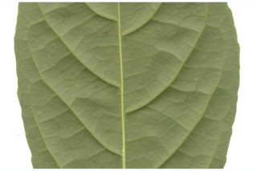
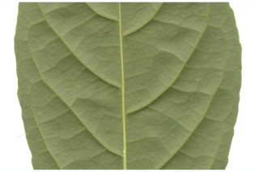

Trees up to 6 m tall.
6 ಮೀ. ಎತ್ತರದವರೆಗಿನ ಮರಗಳು.
Trees up to 6 m tall.
மரங்கள் 6 மீ. உயரம் வரை வளரக்கூடியது.
Bark grey, corky lenticellate; blaze yellowish.
ತೊಗಟೆ ಬೂದು ಬಣ್ಣದಲ್ಲಿದ್ದು ಬೆಂಡುಯುಕ್ತ ವಾಯುವಿನಿಮಯ ರಂಧ್ರಗಳ ಸಮೇತವಿರುತ್ತವೆ; ಕಚ್ಚು ಮಾಡಿದ ಜಾಗ ಹಳದಿ ಬಣ್ಣದ ಛಾಯೆಯಲ್ಲಿರುತ್ತದೆ.
Bark grey, corky lenticellate; blaze yellowish.
மரத்தின் பட்டை சாம்பல் நிறமானது, பெரிய பட்டைத்துளைகள் (லெண்டிசெல்லேட்) உடையது; உள்பட்டை மஞ்சள் நிறமானவை.
Young branchlets terete, puberulous.
ಕಿರುಕೊಂಬೆಗಳು ದುಂಡಾಗಿರುತ್ತವೆ,ಸೂಕ್ಷ್ಮ ಮೃದು ತುಪ್ಪಳದಿಂದ ಕೂಡಿರುತ್ತವೆ.
Young branchlets terete, puberulous.
சிறியநுனிக்கிளைகள் குறுக்குவெட்டுத் தோற்றத்தில் வளையமானது, நுண்ணிய உரோமங்களுடையது அல்லது உரோமங்களற்றது.
Leaves simple, opposite, decussate; stipule interpetiolar caducous and leaving scar; petiole up to 1 cm long, planoconvex in corss section, pubescent when young; lamina 7.5- 16.5 x 4-7.4 cm, elliptic or narrow obovate, apex acuminate, base acute or cuneate, margin crenate (usually above two third of its length), membranous or chartaceous, glabrous beneath; midrib flat or slightly canaliculate above; secondary_nerves 7-8 pairs, gradually curved; tertiary_nerves distantly percurrent.
ಎಲೆಗಳು ಸರಳವಾಗಿದ್ದು ಕತ್ತರಿಯಾಕಾರದ ಅಭಿಮುಖ ಜೋಡನಾ ವ್ಯವಸ್ಥೆಯಲ್ಲಿರುತ್ತವೆ; ಕಾವಿನೆಲೆಗಳು ತೊಟ್ಟುಗಳ ನಡುವೆ ಇರುತ್ತವೆ,ಉದುರಿದ ನಂತರ ಗುರುತುಗಳನ್ನು ಉಳಿಸುತ್ತವೆ; ತೊಟ್ಟು 1 ಸೆಂ.ಮೀ.ವರೆಗಿನ ಉದ್ದವಿದ್ದು,ಅಡ್ಡ ಸೀಳಿದಾಗ ಸಪಾಟ ಪೀನ ಮಧ್ಯದ ಆಕಾರವನ್ನು ಹೊಂದಿದ್ದು ಎಳೆಯದಾಗಿದ್ದಾಗ ಮೃದು ತುಪ್ಪಳದಿಂದ ಆವೃತವಾಗಿರುತ್ತದೆ; ಪತ್ರಗಳು7.5 -16.5 X 4–7.45 ಸೆಂ.ಮೀ. ಗಾತ್ರ, ಅಂಡವೃತ್ತ ಅಥವಾ ಸಂಕುಚಿತ ಬುಗುರಿಯ ಆಕಾರ ಹೊಂದಿದ್ದು, ಕ್ರಮೇಣ ಚೂಪಾಗುವ ಮಾದರಿಯ ತುದಿ, ಚೂಪಾದ ಅಥವಾ ಬೆಣೆಯಾಕಾರದ ಬುಡ, ದುಂಡೇಣಿನ ಅಂಚು (ಸಾಮಾನ್ಯವಾಗಿ ಅಂಚಿನ ಉದ್ದದ ಮೂರನೇ ಎರಡರಷ್ಟು) ತೆಳುಪದರದ ಅಥವಾ ಕಾಗದವನ್ನೋಲುವ ಮೇಲ್ಮೈ ಹೊಂದಿದ್ದು ತಳಭಾಗದಲ್ಲಿ ರೋಮರಹಿತವಾಗಿರುತ್ತವೆ; ಮಧ್ಯನಾಳ ಪತ್ರದ ಮೇಲ್ಭಾಗದಲ್ಲಿ ಚಪ್ಪಟೆಯಾಗಿರುತ್ತದೆ ಅಥವಾ ಕಾಲುವೆಗೆರೆ ಸಮೇತವಿರುತ್ತದೆ;ಎರಡನೇ ದರ್ಜೆಯ ನಾಳಗಳು 7 ರಿಂದ 8 ಜೋಡಿಗಳಿದ್ದು ಕ್ರಮೇಣವಾಗಿ ಬಾಗಿರುತ್ತವೆ;ಮೂರನೇ ದರ್ಜೆಯ ನಾಳಗಳು ಅಂತರವುಳ್ಳ ಎಲೆಯ ದಿಂಡಿಗೆ ಅಡ್ಡವಾಗಿ ಕೂಡುವ ಮಾದರಿಯವು..
Leaves simple, opposite, decussate; stipule interpetiolar caducous and leaving scar; petiole up to 1 cm long, planoconvex in corss section, pubescent when young; lamina 7.5- 16.5 x 4-7.4 cm, elliptic or narrow obovate, apex acuminate, base acute or cuneate, margin crenate (usually above two third of its length), membranous or chartaceous, glabrous beneath; midrib flat or slightly canaliculate above; secondary_nerves 7-8 pairs, gradually curved; tertiary_nerves distantly percurrent.
இலைகள் தனித்தவை, எதிரடுக்கமானவை, குறுக்குமறுக்கானவை; இலையடிச்செதில் காம்பிற்கு நடுவே (இண்டர்பீட்டியோலார்) உடையது, எளிதில் உதிரக்கூடியவை மற்றும் தழும்புகளை ஏற்படுத்தவல்லது; இலைக்காம்பு 1 செ.மீ. நீளமானது, இலைக்காம்பு குறுக்குவெட்டுத் தோற்றத்தில் பிளேனோகான்வக்ஸ், இளம்பருவத்தில் நுண்ணிய உரோமங்களுடையது; இலை அலகு 7.5- 16.5 X 4-7.4 செ.மீ., நீள்வட்ட வடிவானது அல்லது குறுகிய தலைகீழ் முட்டை வடிவானது, அலகின் நுனி அதிக்கூரியது, அலகின் தளம் கூரியது அல்லது ஆப்பு வடிவானது, அலகின் விளிம்பு பிறை போன்ற பற்களுடையது (பொரும்பாலும் மூன்றில் இரண்டு பங்கு நீளத்தில்), ஜவ்வு போன்றது அல்லது சார்ட்டேசியஸ், உரோமங்களற்றது; மையநரம்பு மேற்புறத்தில் அலகின் பரப்பிற்கு சமமானது அல்லது சிறிது அலகின் பரப்பைவிட சிறிது பள்ளமானது; இரண்டாம் நிலை நரம்புகள் 7-8 ஜோடிகள், சீராக வளைந்தது; மூன்றாம் நிலை நரம்புகள் அகன்ற பெர்க்கரண்ட்.
Inflorescence axillary cymes; flowers polygamodioecious, white; petals laciniate.
ಪುಷ್ಪಮಂಜರಿಗಳು ಅಕ್ಷಾಕಂಕುಳಿನಲ್ಲಿನ ಮಧ್ಯಾರಂಭಿ ಮಾದರಿಯಲ್ಲಿರುತ್ತವೆ;ಹೂಗಳು ಸಂಕೀರ್ಣ ಲಿಂಗಿಗಳಾಗಿದ್ದು ಹೆಣ್ಣು ಮತ್ತು ಗಂಡು ಹೂಗಳು ಪ್ರತ್ಯೇಕ ಸಸ್ಯಳಲ್ಲಿರುತ್ತವೆ ಹಾಗೂ ಬಿಳಿ ಬಣ್ಣದಲ್ಲಿರುತ್ತವೆ;ಪುಷ್ಪ ದಳಗಳು ಆಳವಾದ ಸೀಳಿಕೆಗಳ ಸಮೇತವಿರುತ್ತವೆ.
Inflorescence axillary cymes; flowers polygamodioecious, white; petals laciniate.
மஞ்சரி இலைக்கோணங்களில் காணப்படும் சைம் வகை; மலர்கள் பாலிகேமோ-டையிசியஸ், வெள்ளை நிறமானது; அல்லி இதழ்கள் விளிம்புகளில் மெல்லிய பிளவுகளுடையது.
Capsule, subglobose, 0.7 cm in across, greenish black; seeds arillate.
ಸಂಪುಟ ಫಲಗಳು ಉಪಗೋಳಾಕಾರದಲ್ಲಿದ್ದು, 0.7 ಸೆಂ.ಮೀ. ಅಡ್ಡಗಲತೆಯಲ್ಲಿದ್ದು ಹಸಿರು ಮಿಶ್ರಿತ ಕಪ್ಪು ಬಣ್ಣಹೊಂದಿರುತ್ತವೆ;ಬೀಜಗಳು ಪತ್ರೆ ಸಮೇತವಿರುತ್ತವೆ.
Capsule, subglobose, 0.7 cm in across, greenish black; seeds arillate.
வெடிகனி (கேப்சியூல்), கோளவடிவானது, 0.7 செ.மீ. குறுக்களவுடையது, பச்சை-கருப்பு நிறமானது; விதைகள் பத்ரி (ஏரில்) கொண்டது.
 
